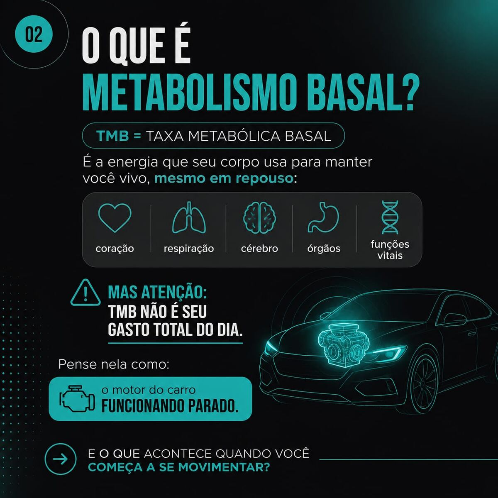
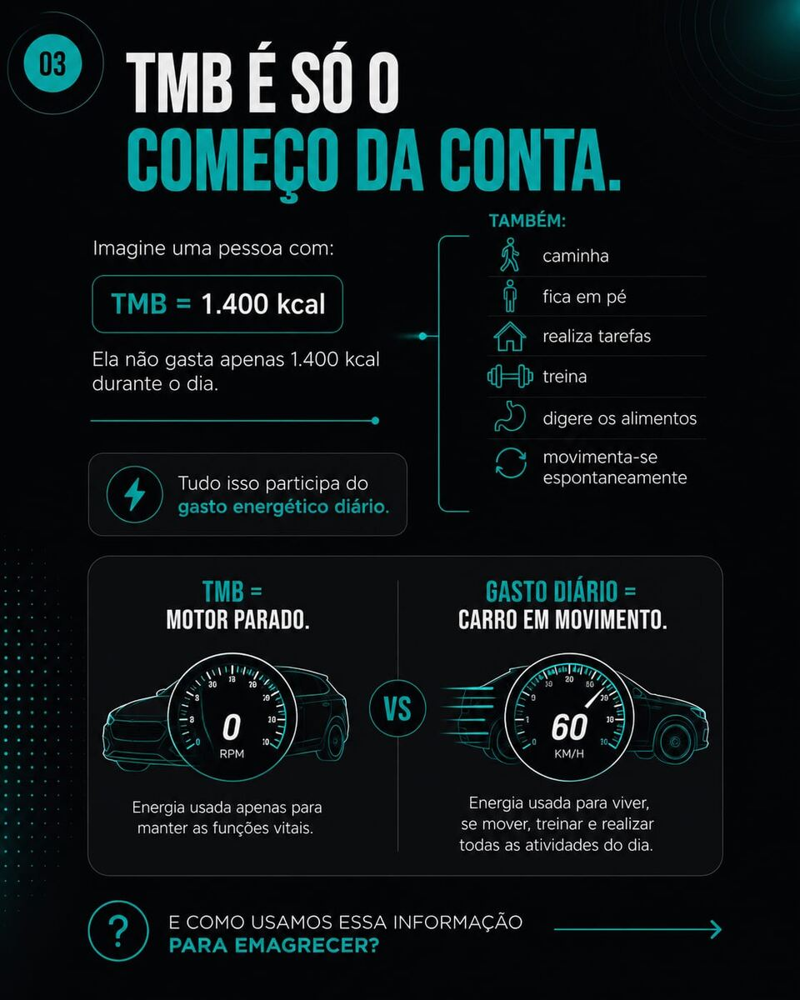
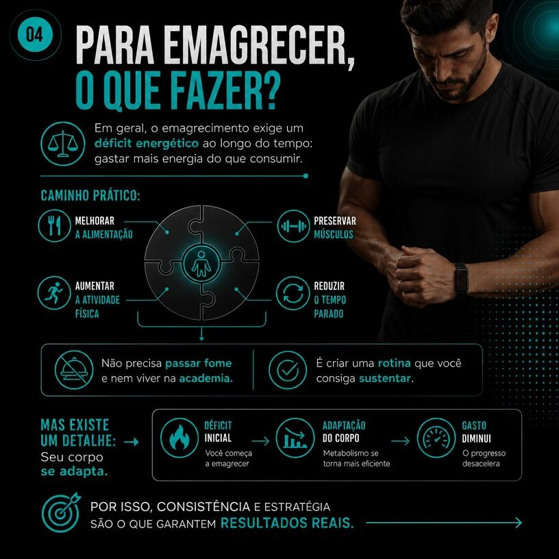
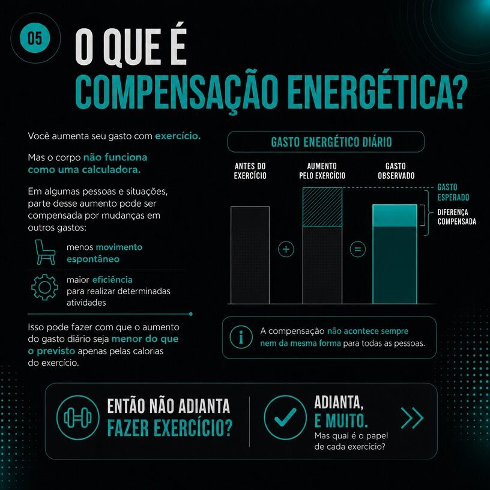
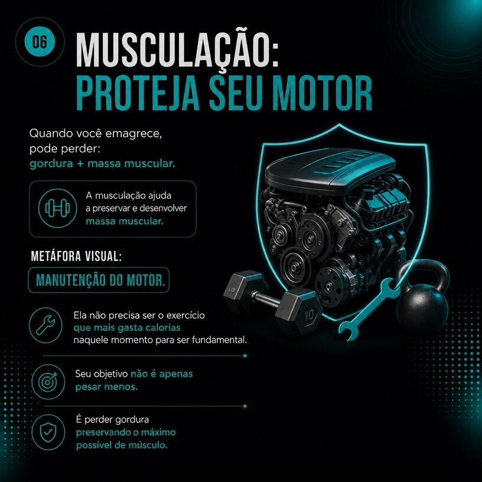
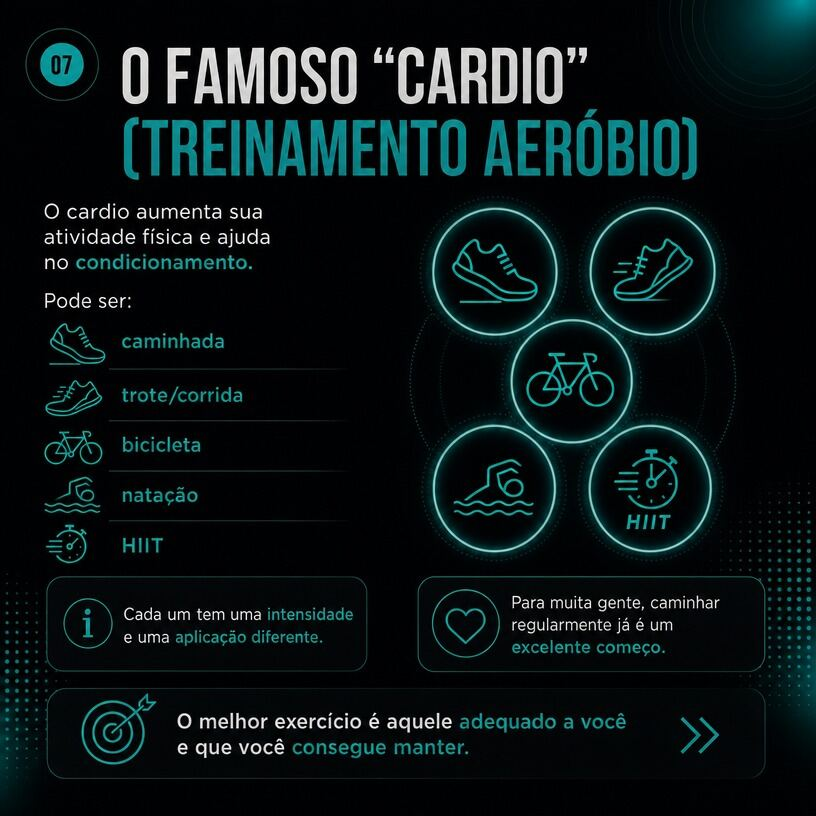
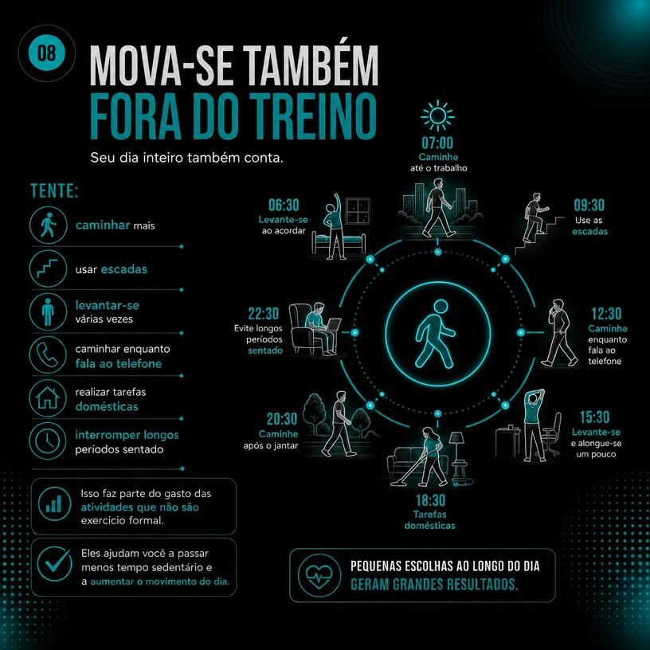
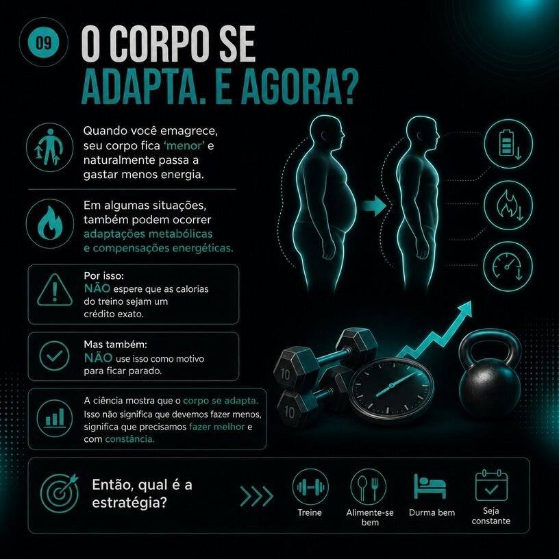
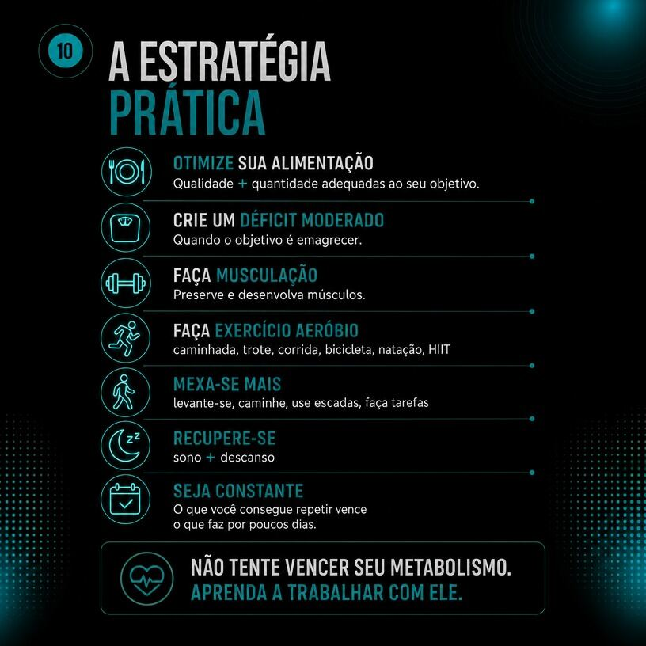

TMB, gasto energético total e adaptação metabólica — entenda como o corpo realmente funciona.
Taxa Metabólica Basal (TMB)
A Taxa Metabólica Basal representa a energia mínima necessária para a manutenção das funções vitais em repouso — atividade cardíaca, respiratória, cerebral e demais processos orgânicos essenciais. A TMB, no entanto, não equivale ao gasto energético total diário: representa apenas a base sobre a qual se somam os demais componentes do gasto.

Gasto Energético Total Diário
O gasto energético diário resulta da soma entre a TMB e outros componentes: a atividade física estruturada (treino), o efeito térmico dos alimentos (digestão) e a atividade física não relacionada ao exercício (NEAT — deslocamentos, tarefas domésticas, postura, movimentação espontânea). Um indivíduo com TMB de 1.400 kcal, por exemplo, apresentará gasto total superior a esse valor, na dependência do seu nível geral de atividade.

Balanço Energético e Emagrecimento
O processo de emagrecimento depende, de forma geral, da manutenção de um déficit energético sustentado ao longo do tempo — ou seja, gasto energético superior ao consumo calórico. Isso é obtido pela combinação de ajustes na alimentação, preservação de massa muscular, aumento da atividade física estruturada e redução do tempo em comportamento sedentário.

Adaptação Metabólica e Compensação Energética
O organismo não responde ao aumento do gasto energético de forma estritamente linear. Em determinados contextos, parte do gasto adicional gerado pelo exercício pode ser parcialmente compensada por reduções em outros componentes — como menor movimentação espontânea ou maior eficiência metabólica em tarefas cotidianas — resultando em aumento líquido do gasto diário inferior ao previsto exclusivamente pelo cálculo calórico do exercício. Esse fenômeno não invalida os benefícios do exercício físico; indica, sim, a necessidade de estratégias consistentes e sustentáveis ao longo do tempo, e não apenas isoladas.

Papel da Musculação
Durante processos de emagrecimento, há risco de perda concomitante de massa gorda e massa muscular. O treinamento de força atua na preservação e no desenvolvimento da massa muscular, sendo componente central não apenas pelo gasto calórico agudo, mas pela manutenção da composição corporal e da taxa metabólica ao longo do processo.

Papel do Treinamento Cardiorrespiratório
O treinamento cardiorrespiratório — caminhada, corrida, ciclismo, natação ou treinamento intervalado de alta intensidade (HIIT) — contribui para o aumento do gasto energético e para o condicionamento cardiovascular. A escolha da modalidade deve considerar a adequação individual e a capacidade de manutenção a longo prazo, mais do que a intensidade isolada.

Atividade Física Não Estruturada (NEAT)
O NEAT compreende o gasto energético associado a atividades cotidianas fora do treino formal — uso de escadas, deslocamentos, tarefas domésticas, tempo em pé. Embora não eleve diretamente a TMB, o NEAT reduz o tempo em comportamento sedentário e contribui de forma relevante para o gasto energético total diário.

O Corpo se Adapta
Quando ocorre emagrecimento, o corpo passa a demandar menos energia, e podem ocorrer adaptações metabólicas adicionais. Isso não significa que o exercício "deixa de funcionar" — significa que a estratégia precisa ser mantida com constância e ajustada ao longo do tempo, em vez de tratada como um cálculo fixo.

Síntese Aplicada
A abordagem eficaz para o controle de peso combina: ajuste alimentar qualitativo e quantitativo; déficit energético moderado, quando indicado; treinamento de força para preservação muscular; treinamento cardiorrespiratório adequado ao perfil individual; redução do comportamento sedentário; sono e recuperação adequados; e, sobretudo, constância na execução ao longo do tempo.

Fontes: Pontzer & Trexler, Current Biology (2026); Hall, Obesity (2018).
Treino individualizado, com acompanhamento técnico especializado.